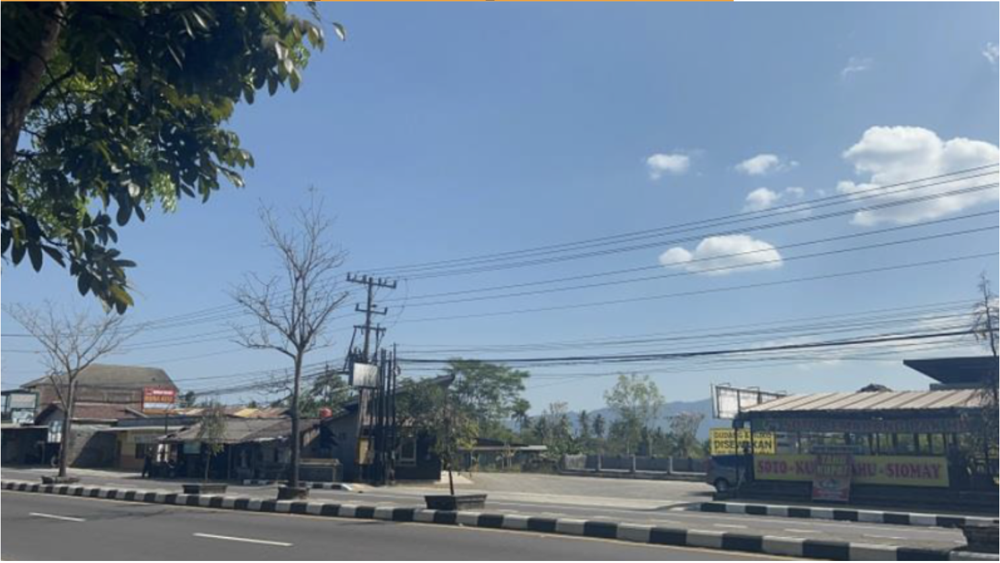
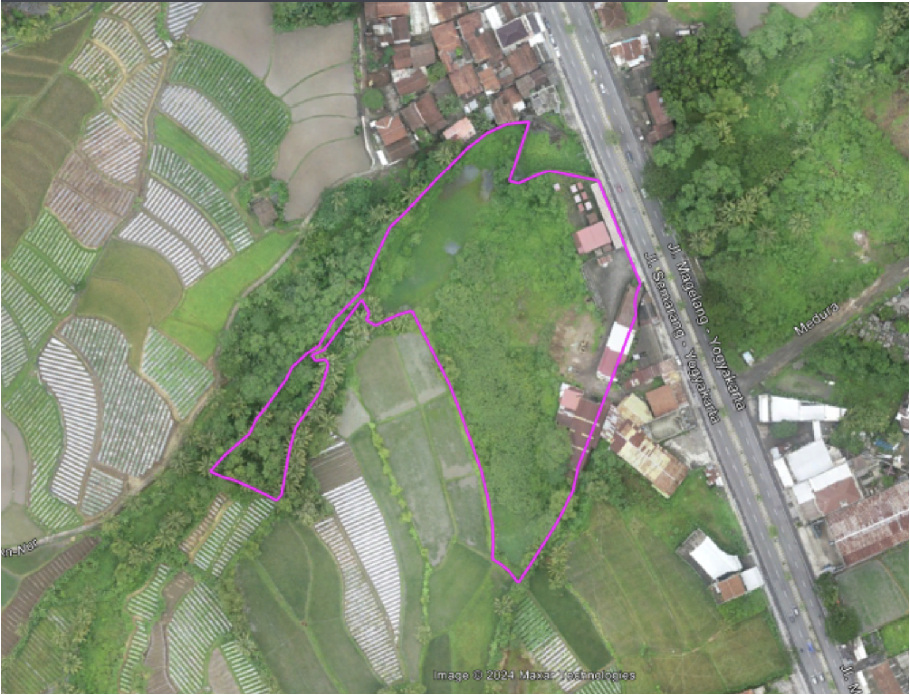
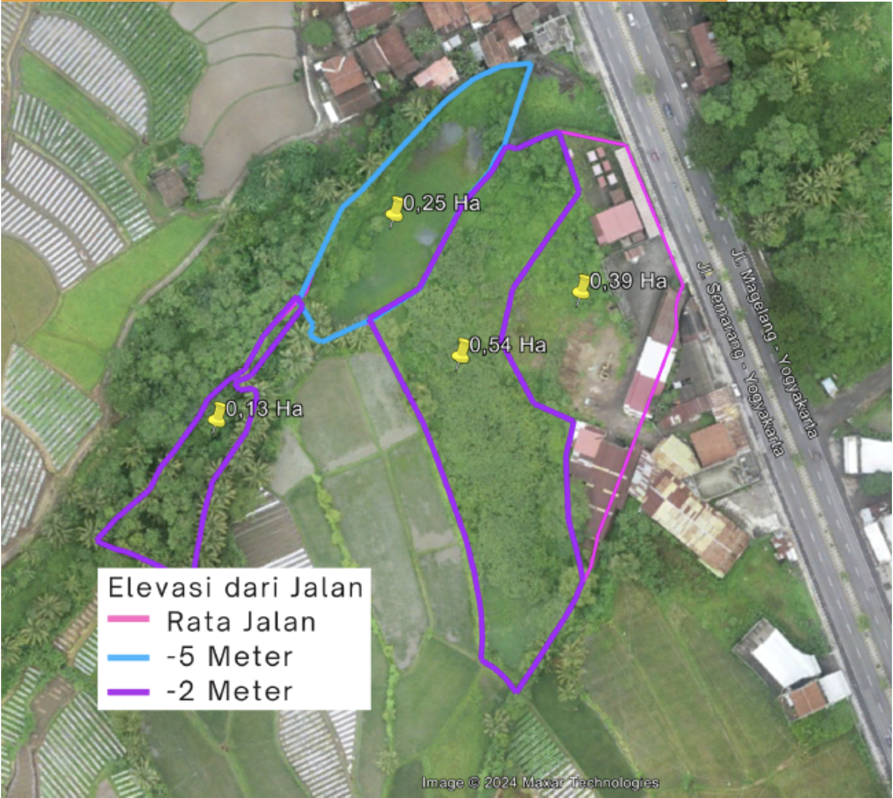
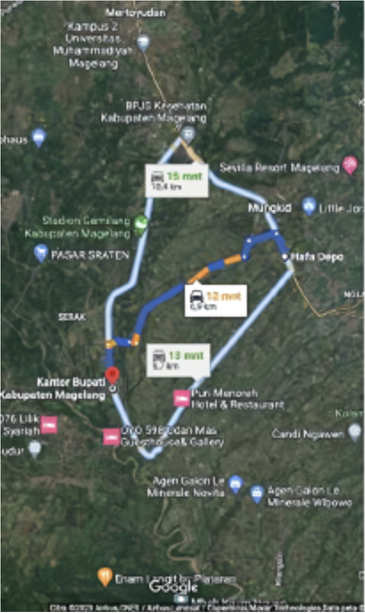
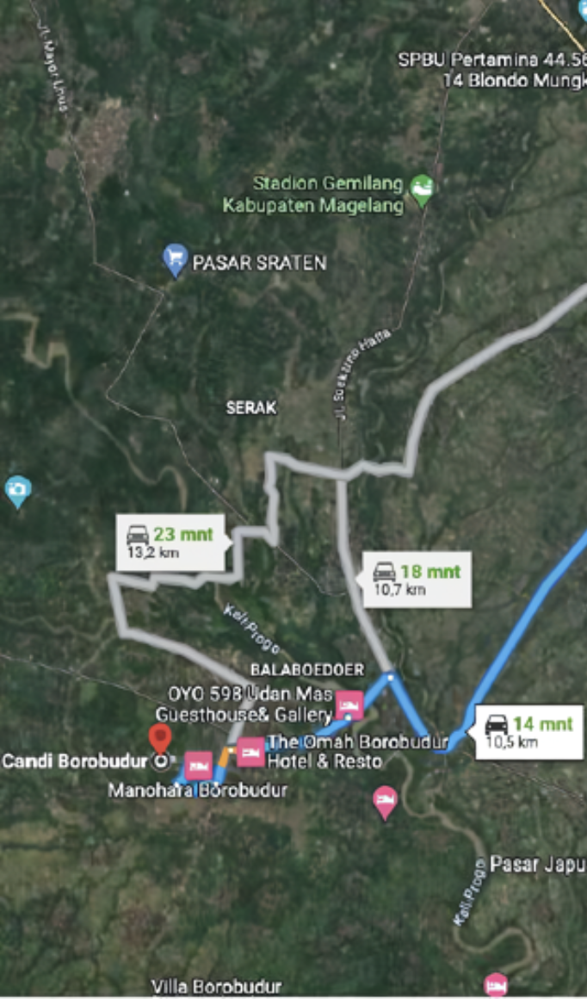
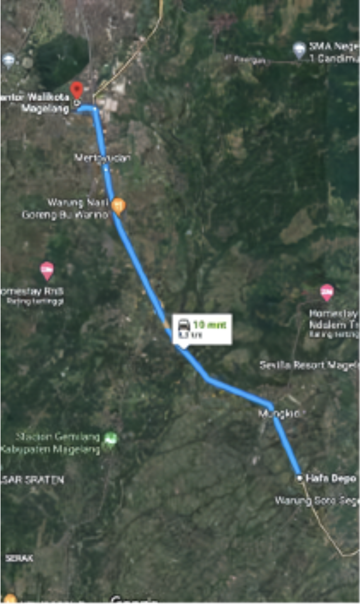

Peta Lokasi
Lebar tanah bagian depan yang berbatasan langsung dengan Jalan Raya Magelang - Yogya: +50 m
Foto Tampak Depan

Peta Lokasi

Kondisi Lahan

Akses Lahan
Akses lahan tepi Jalan Raya Antar Provinsi Magelang - Yogya Km.11, Desa Bojong, Kec. Mungkid, Kab. Magelang, Jawa Tengah (lebar jalan +20 m).
Jarak ke tempat penting:
Kantor Bupati Mungkid

12 Menit
Candi Borobudur

15 Menit
Pusat Kota Magelang

10 Menit
Suasana Sekitar
Lahan sekitar area bersih, bebas banjir, hijau, sejuk, dan asri.
- Berikut keadaan wilayah sekitar area:
Utara: Terdapat beberapa pemukiman warga.
Barat: Merupakan area persawahan yang luas.
Timur: Jalan Raya Jogja - Magelang, bersebrangan dengan pekarangan (lahan kosong).
Selatan: Persawahan yang berdekatan dengan beberapa warung makan dan gudang ekspedisi.
Prospek Lahan
Perumahan: Lingkungan asri, sejuk, dan mudah diakses menjadikan lahan ini cocok untuk perumahan.
Hotel & Resort: Lokasi strategis dekat kawasan wisata terbesar di Jawa Tengah.
Pabrik: Akses jalan provinsi memudahkan pendirian pabrik produksi skala besar.
Identitas Tanah
Tanah SHM terdiri dari 9 Sertifikat dalam satu lokasi, luas total: 13.367 m2
-
1. SHM No.1942, luas: 1.906 m2
(a/n. Rofikoh)
-
2. SHM No.1760, luas: 840 m2
(a/n. Fatihatul Huda)
-
3. SHM No.1761, luas: 3.275 m2
(a/n. Fatihatul Huda)
-
4. SHM No.2010, luas: 709 m2
(a/n. Fatihatul Huda)
-
5. SHM No.0089, luas: 640 m2
(a/n. Fatihatul Huda)
-
6. SHM No.2113, luas: 240 m2
(a/n. Fatihatul Huda)
-
7. SHM No.1994, luas: 3.295 m2
(a/n. Fatihatul Huda)
-
8. SHM No.0260, luas: 2.355 m2
(a/n. Fatihatul Huda)
-
9. SHM No.03530, luas: 346 m2
(a/n. Mustaufiyati)
Penawaran Harga & Kontak
Harga: Rp 2.500.000/m2
Hubungi: